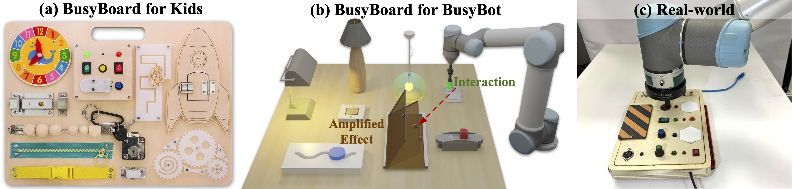

BusyBot: Learning to Interact, Reason, and Plan
in a BusyBoard Environment

We introduce BusyBoard, a toy-inspired robot learning environment that leverages a diverse set of articulated objects and inter-object functional relations to provide rich visual feedback for robot interactions. We also introduce a learning framework, BusyBot, which allows an agent to jointly acquire three fundamental capabilities (interaction, reasoning, and planning) in an integrated and self-supervised manner. With the rich sensory feedback provided by BusyBoard, BusyBot first learns a policy to efficiently interact with the environment; then with data collected using the policy, BusyBot reasons the inter-object functional relations through a causal discovery network; and finally by combining the learned interaction policy and relation reasoning skill, the agent is able to perform goal-conditioned manipulation tasks. We evaluate BusyBot in both simulated and real-world environments, and validate its generalizability to unseen objects and relations.
Paper
Latest version: arXiv

Team


Columbia University in the City of New York
BibTeX
@misc{liu2022busybot,
title={BusyBot: Learning to Interact, Reason, and Plan in a BusyBoard Environment},
author={Zeyi Liu and Zhenjia Xu and Shuran Song},
year={2022},
eprint={2207.08192},
archivePrefix={arXiv},
primaryClass={cs.RO}}Technical Summary Video
Environment and Task
We build a simulation environment called BusyBoard, which resembles the busyboard toy for kids. Each busyboard environment is composed of trigger objects, responder objects and the inter-object functional relations. We procedurally generate busyboard environments with diverse appearances, including different board color/texture, object instances, object layout, and the underlying relations. Based on the BusyBoard environment, we train an embodied agent to learn three fundamental capabilities: interaction, reasoning, and planning.
Real World Experiments
We test the trained model on a real-world busyboard with robot interactions. We show that our model is able to infer the action affordances from real-world visual observations and reason inter-object functional relations through robot interactions. The video shows reasoning result with respect to interaction steps; the right image shows reasoning result on a few more configurations. More details can be found in the supplementary materials.
Approach Overview
Our approach contains three modules: the interaction module infers a sequence of actions to efficiently interact with a given scene from visual input. the reasoning module infers a functional scene graph (i.e., inference network) and predicts future states (i.e., dynamic network). Finally, the planning module uses the manipulation policy network (learned from multiple boards), inference and dynamics network (extracted from the specific board) to plan actions for the target state.
Action Inference and Relation Reasoning Results
(a) shows the learned position and direction affordances; (b) shows interaction steps and corresponding reasoning results; (c) shows reasoning results on more configurations. The red arrow indicates inferred inter-object functional relations and the green arrow indicates ground truth.
Goal-conditioned Manipulation Results
Compared to the predictive agent which relies on correct future state predictions from the dynamics model, the relation agent generalizes better on novel objects. However, the relation agent struggles in handling one-to-many relations since it cannot infer the exact action position and direction. Our method(BusyBot) combines the advantages of both agents.
Acknowledgements
This work was supported in part by National Science Foundation under 2143601, 2037101, and 2132519. Many thanks to Huy Ha, Cheng Chi, Samir Gadre, Neil Nie, and Zhanpeng He on valuable feedback and support. We would also like to thank Google for the UR5 robot hardware. The views and conclusions contained herein are those of the authors and should not be interpreted as necessarily representing the official policies, either expressed or implied, of the sponsors.
Contact
If you have any questions, please feel free to contact Zeyi Liu.